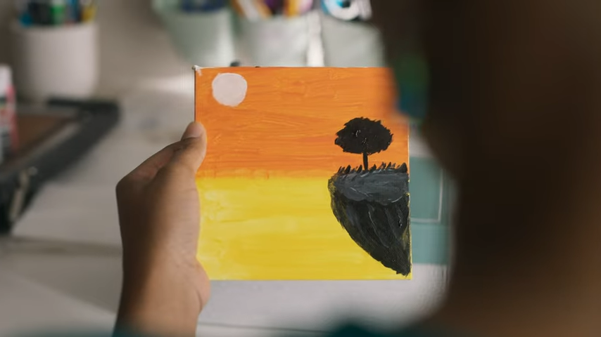

▶ MINI-DOC FEATURE // ANGELA N. MOORE
SIGNAL: NYT_FEATURE // FUNDS_ON_AUTOPILOT
TIME CODE: 00:01:21

▶
The New York Times • T Brand Studio // National Ad Campaign Feature
An independent case study exploring how financial literacy fuels creative freedom.
[ STORY ] Founder Journey // Rare Book Library Roots
|
[ ETHOS ] Financial Readiness & Time for Creative Passions